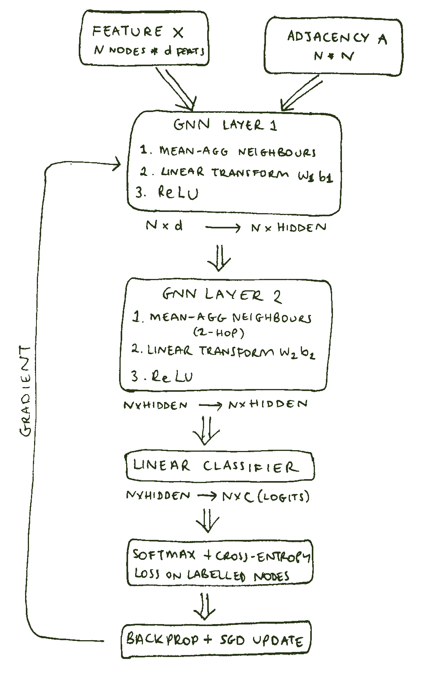

An Intro to GNNs
September 2026A (very basic!) intro to GNNs
Why Graph Neural Networks?
ML models often use tabular data to make predictions. Which is great if your model is built from tabular data, but not so great when it's not. Instead, some data is better represented by graphs, where a graph consists of edges and nodes. Some examples of data that are difficult to represent in a table, but instead can be described by graphs:
- Social networks: people are nodes and their connections are edges. There would only be edges between people who know each other
- Transportation networks: nodes are bus stops/train stations etc, and edges are the routes connecting the stops
- Molecules (what we're interested in!): atoms are nodes, and edges are bonds
A great place to start is A Gentle Introduction to Graph Neural Networks. I used this as a starting point, and also created an interactive widget inspired by that article with my own GNN - you can find it further down this page.
The basics
A GNN is a machine learning model that takes in some input data and outputs a prediction. In the process of training, the model learns from the structure of the graph to apply to unknown inputs. Let's look at some examples of key graph terminology using the examples from before:
- Node
- A point on a graph that is connected to other nodes. In the social network exmaple, this would be a person.
- Edge
- The connector between two nodes. For a social network, this is a relationship between two people.
- Directed vs undirected
- If an edge is undirected, direction doesn't matter: two people who know each other have an undirected edge between them. If a bus route connects two stops in one direction but not the other, that edge is directed.
- Global attributes
- Properties of the entire graph. For a molecule, this might be its lipophilicity.
Within GNNs, we have different types of problems:
- Graph-level: predict a single property of the whole graph (for example, the solubility of a molecule)
- Node-level: predict a property for a given node (for example, a person's social status)
- Edge-level: predict a property of a single edge (for example, the relationship between two people)
How a GNN works
A GNN takes in a graph and outputs a graph, finding relationships without changing connectivity. Most GNNs use a message passing framework, which will be discussed here.
The GNN learns new embeddings for all graph attributes (nodes, edges, global properties), with a separate multi-layer perceptron on each component - this is the GNN layer. Several GNN layers are stacked together, which output the transformed graph. A classification layer may be put on top of this (to transform outputs) and the prediction is output. There is info in both the nodes and edges, and gathering all this information is called "pooling", which is just aggregation.
Message passing
Message passing is how learned embeddings can be made aware of graph connectivity.
- For each node in a graph, all neighbour node embeddings are aggregated via an aggregate function
- All pooled messages are passed through an update function
- Similar to convolution: an element's value is updated via aggregation and processing of neighbour properties. Note that the number of neighbours can vary in a graph
- By stacking message passing GNN layers, a node can eventually incorporate info across the entire graph. After n layers, a node has info from nodes n edges away
Global representations
For small graphs, there are only a few steps away from all nodes, so messages can be passed. For much larger graphs, this would be too many layers (note also that having too many layers will average properties out over all the different nodes). A way around this is to use a global representation of a graph, sometimes called a context vector, which is connected to all nodes and edges and can be used as a bridge to pass info.
Putting it together
Just like a neural network, a GNN (or in this case, GCN - graph convolutional network) is made up of layers. As the features of a node pass through the layers, parameters control how this information propagates through the graph.
W is a weight matrix that is multiplied by the features, and b is the offset that is added. At each layer, W and b change the input matrix and pass it on to the next layer. The values of W and b per layer are updated via backpropagation.
After the data has passed through the hidden layers, the dimensions of the hidden matrix need to be converted to the desired dimensions of the output matrix, in another layer with learnable weights and biases. The flow diagram below shows a flow through a classification problem.

Test out some hyperparams
Below is an interactive widget to investigate how changing various parameters affects performance of the model. Using the ESOL solubility dataset to predict solubility of a molecule. The graph shows predicted vs actual solubilities. Code can be found in the repo molecular-gnn.
- Hidden channels: the size of the hidden feature vectors inside the hidden layers
- Layers: the number of layers the data passes through
- Learning rate: the step size when updating W and b
- Weight decay: a type of regularisation - adds a small penalty to the loss function based on weight size, encouraging the network to keep W small
- Epochs: how many passes of the entire training set through the GNN
Note: every combination was trained ahead of time (3 seeds each), so this is a lookup rather than a live model.